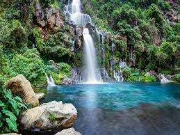
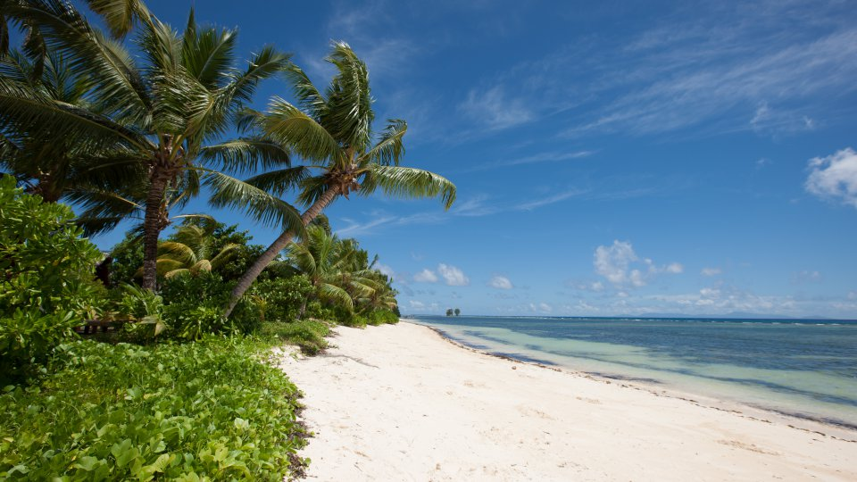
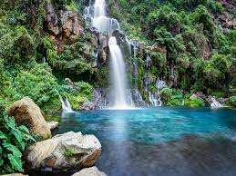
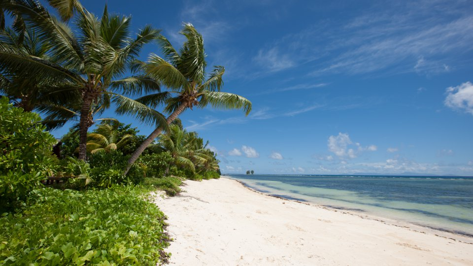

La Réunion
"La Réunion, l’île intense" est une terre de contrastes et de diversité. Ce joyau de l’océan Indien s’affiche sur ses 2.512 km² comme l’un des territoires, le plus unique, des départements et régions d’outre-mer. Située à 9.345 km, soit à 11h de vol de Paris, en plein hémisphère Sud, La Réunion allie l’exotisme d’une destination lointaine à la sécurité d’une région européenne.
Terre de métissage ethnique remarquable...
La Réunion est composée d’une population originaire des quatre coins du monde (Afrique, Asie, Europe, Inde, Madagascar) qui invite dans la douce chaleur du soleil à vivre des aventures sans modération à travers ses multiples expériences passionnantes et insolites.
 



La Réunion est envoûtante!
Multi-ethnique, authentique, sa culture se conjugue au pluriel avec la découverte de ses cases créoles colorées, ses jardins aux mille essences, ses temples hindous, ses églises, ses pagodes chinoises, ses mosquées, ses demeures coloniales, ses monuments historiques, son architecture créole, ses musées, ses festivals de musique et ses fêtes traditionnelles… Sa gastronomie aux saveurs et senteurs épicées, authentiques et innovantes saura attiser les papilles. Laissez-vous emporter par une féérie d’épices locales qui viennent ensoleiller les plats réunionnais.
La Réunion, une île intensément grandiose!
Pitons, cirques et remparts sont inscrits au Patrimoine mondial par l’UNESCO. La Réunion est une destination tropicale aux paysages à couper le souffle où les reliefs escarpés offrent des panoramas spectaculaires au volcan actif du Piton de La Fournaise, au Piton des Neiges, dans les cirques de Salazie, Mafate et Cilaos... Les explorateurs les plus respectueux en garderont des souvenirs mémorables !